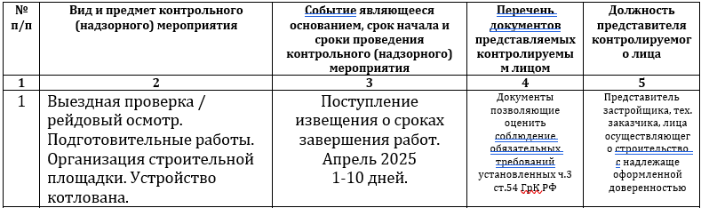
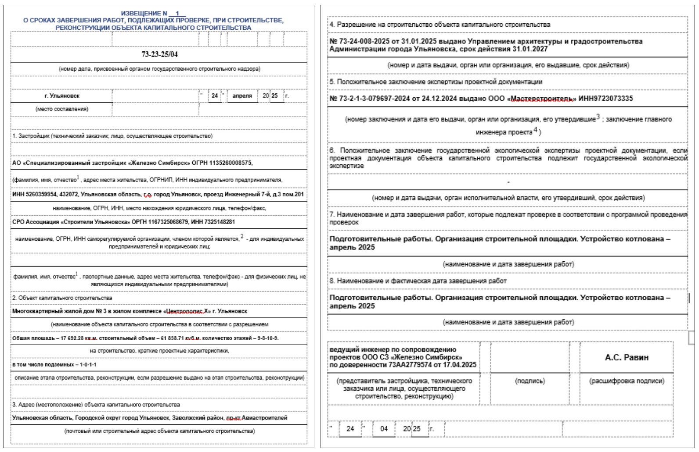

Проведение проверок в период строительных работ
Самый продолжительный и средней сложности этап — организация и проведение проверок инспектора ГСН в период активных строительно-монтажных работ.
Разберем на конкретном примере.
Возьмем самый первый и обязательный этап программы проведения проверок: п. 1 «Подготовительные работы. Организация строительной площадки. Устройство котлована».

Смотрим в третий столбец, находим дату «Апрель 2025» — это означает, что к 30.04.2025 застройщик, технический заказчик и подрядная организация должны в полном объеме выполнить работы, предусмотренные п. 1.
На строительной площадке должны быть физически выполнены работы:
- установлено ограждение и освещение;
- установлен строительный городок;
- обустроен въезд на площадку (мойка колес, освещение, дорожные плиты, КПП);
- повешены предупредительные знаки и паспорт объекта;
- раскопан котлован (при необходимости — укреплены стенки).
Также должна быть подготовлена исполнительная документация, состоящая из:
- заполненного журнала общих работ;
- подготовленных и подписанных актов скрытых работ;
- освидетельствования дна котлована специализированной организацией (при необходимости).
Только после выполнения всего вышеописанного принимается решение о вызове инспектора — путем подготовки и направления извещения о сроках завершения работ.
Если один из пунктов не выполнен (или, самое критичное, работы не завершены), необходимо подготовить извещение о переносе сроков завершения работ. Его форма идентична форме извещения о сроках, в конце указывается дата по программе проведения проверок и новая дата, на которую переносим (в которой уверены, что работы и документы будут собраны).
Извещение направляется в бумажном виде в инспекцию, регистрируется в системе электронного документооборота органа строительного надзора и отписывается ответственному инспектору.

Согласно законодательству, за несвоевременное извещение застройщик может быть подвергнут санкциям со стороны ГСН:
- предупреждение — когда нарушение совершено впервые;
- штраф — когда нарушение не первое, сумма от 100 до 300 тысяч рублей.